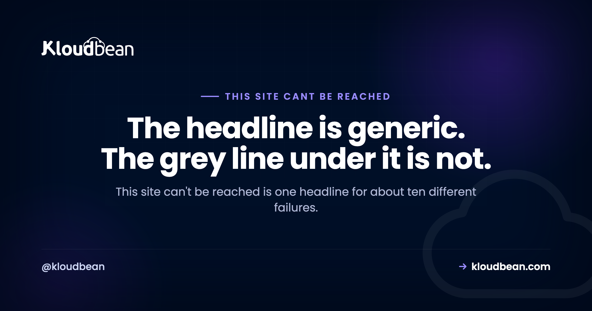

This Site Can't Be Reached: Which Layer Actually Broke

"This site can't be reached" is the least helpful error message Chrome has, and that's by design. It's the catch-all for roughly ten unrelated failures. Your Wi-Fi dropped. A domain doesn't resolve. A firewall silently dropped your packets. A server crashed. Each one needs a different fix, and the headline tells you nothing about which you've got. The useful part is the small grey line underneath it, which most people scroll past.
Find the grey code under the headline first, because it names the layer that broke. DNS_PROBE_FINISHED_NXDOMAIN or ERR_NAME_NOT_RESOLVED means the domain never resolved to an address. ERR_CONNECTION_REFUSED means something answered and declined. ERR_CONNECTION_TIMED_OUT means nothing answered at all. ERR_INTERNET_DISCONNECTED means your own machine has no working link. Fix the named layer, not the headline. If there's no code at all, try the site on mobile data and from a second device, which narrows it to your network, your machine, or the server.
The request crosses four things, and any of them can break
Before the codes make sense, it helps to see what's actually happening. Loading a page means clearing four hurdles in order, and Chrome reports the same headline no matter which one you trip on.
Match your sub-code to the layer that broke
Look under the headline. The code is small, grey, and easy to miss, and it's the entire diagnosis. Note that it doesn't always begin with ERR_. DNS failures often report as DNS_PROBE_ instead, which trips people up when they go searching.
| Sub-code | What it proves | Go here |
|---|---|---|
ERR_INTERNET_DISCONNECTED | Your device has no working network at all. Nothing left the machine. | Your Wi-Fi, cable, or VPN |
DNS_PROBE_FINISHED_NXDOMAIN | The domain resolved to nothing. It's unregistered, expired, or has no record. | ERR_NAME_NOT_RESOLVED |
ERR_NAME_NOT_RESOLVED | Same layer. The lookup failed, so there was never an address to connect to. | ERR_NAME_NOT_RESOLVED |
ERR_CONNECTION_REFUSED | Something received the request and actively said no. A stopped service or a firewall. | The reset, refused and timeout split |
ERR_CONNECTION_TIMED_OUT | Nothing answered. Packets are being dropped in silence. | The reset, refused and timeout split |
ERR_CONNECTION_RESET | The connection was open, then killed mid-flight. | ERR_CONNECTION_RESET |
ERR_ADDRESS_UNREACHABLE | DNS worked, but there's no route to that address from where you are. | Routing, below |
ERR_NETWORK_CHANGED | Your network switched underneath the request. Usually harmless. | Routing, below |
ERR_SSL_PROTOCOL_ERROR | You reached the server. Encryption is where it fell apart. | ERR_SSL_PROTOCOL_ERROR |
ERR_BLOCKED_BY_RESPONSE | The response arrived and a cross-origin policy refused it. | ERR_BLOCKED_BY_RESPONSE |
ERR_FAILED or no code | Nothing useful. Chrome couldn't classify it. | Observations, below |
If you want the authoritative list rather than a summary, Chromium publishes every code it can emit in net/base/net_error_list.h. Each entry carries a short comment explaining what triggers it. It's the fastest way to check whether a code you've never seen means what a forum post claims.
No code? Three observations narrow it anyway
Sometimes the code is missing, or it's ERR_FAILED, which means Chrome gave up classifying. You can still eliminate whole layers without it. Do these in order and stop as soon as one fails.
| Observation | If it also fails | If it works |
|---|---|---|
| Any other website loads | Your machine or your network | Specific to that one site |
| Same site on mobile data | The site, or the route to it | Your Wi-Fi, router, or DNS |
| Same site for a friend elsewhere | The site is genuinely down | Something local to you |
That third row is worth the thirty seconds. It's the difference between waiting for someone else to fix a server and digging through your own settings for an hour. And it's the check people skip most, because when a site fails it feels global.
One command does the same job from a terminal, and it separates DNS from connectivity in a single line:
# Does the name resolve, and does the port answer?
dig +short example.com
curl -sS -o /dev/null -w "%{http_code}\n" --max-time 10 https://example.comEmpty output from dig is a DNS problem and nothing else. An address from dig plus a hang from curl means the name works but the server or the path to it doesn't. That's two layers eliminated in one command.
The branches that don't get their own guide
ERR_INTERNET_DISCONNECTED is the honest one. Chrome is telling you it never got off your machine. There's no server to blame. Check whether you're actually associated with a network, whether a VPN client is holding the default route without a working tunnel, and whether a captive portal (hotel or airport Wi-Fi) is waiting for you to accept its terms. That last one is common and looks exactly like a broken internet connection.
ERR_ADDRESS_UNREACHABLE means DNS worked and routing didn't. You got an address and there's no path to it. Two realistic causes. The record points at a private or stale address, which you can spot immediately because the answer starts with 10., 192.168., or 172.16. through 172.31. and you're not on that network. Or the destination is genuinely unroutable from your position, which happens with IPv6: your machine prefers an AAAA record, the path to it is broken, and the IPv4 address would have worked fine. Test that theory directly:
curl -4 -sS -o /dev/null -w "ipv4 %{http_code}\n" https://example.com
curl -6 -sS -o /dev/null -w "ipv6 %{http_code}\n" https://example.comIf IPv4 answers and IPv6 hangs, you've found it. Your ISP or your router is advertising IPv6 it can't actually deliver. Nothing on the server is wrong.
ERR_NETWORK_CHANGED is usually not a problem. Your device switched network underneath an in-flight request: Wi-Fi to cellular, one access point to another, a VPN connecting or dropping. Reload and it goes away. If it keeps happening, something is flapping. A laptop roaming between two access points with the same name is the usual culprit, and so is power-saving on a wireless adapter. It's a local annoyance, not a site fault.
When your own site shows "this site can't be reached" to visitors
Different problem, different reader. If the site loads for you and not for someone else, resist the urge to change server configuration. You have a working case and a failing one, which is the best diagnostic position there is. Find what differs.
Ask them for the grey code. A screenshot settles in seconds what guessing takes an afternoon to narrow. NXDOMAIN from one person while it resolves for you almost always means their resolver is caching an old record, especially soon after a DNS change.
Check whether you blocked them. This is the one people never suspect, and it deserves naming plainly because it's caused by security software doing its job. Fail2ban watches for failed logins and bans the source address. A customer who mistyped a password several times, or a whole office sharing one public IP where somebody else did, gets dropped at the firewall. To them the site is unreachable. To you it's fine. If you use IP access control rules, check those too. A deny list written months ago outlives the reason it was written.
Check whether the certificate expired. An expired certificate usually produces a warning rather than this headline, but some clients and older Android WebViews fail outright with a connection error instead. If the site went unreachable for a subset of visitors on a date that looks suspiciously like a renewal boundary, that's your lead.
Confirm from outside your own network. Your machine may have a cached DNS answer, a hosts-file entry, or an allowlisted address that visitors don't. Query a public resolver directly so you see what the rest of the world sees:
dig +short example.com @1.1.1.1
dig +short example.com @8.8.8.8Different answers from different resolvers means propagation is still settling, or you have conflicting records at two providers, which happens more often than you'd think after a migration.
Where hosting helps, and where it honestly doesn't
Start with the part we can't fix, because it's the most common cause on this list. DNS usually lives at your registrar, not your host. If your domain doesn't resolve, that's a record at whoever manages your nameservers, and no hosting platform can reach in and correct it for you. Anyone implying otherwise is selling.
What a managed platform does remove is the subset of these failures that comes from server-side neglect. On Kloudbean, SSL certificates are issued and renewed for you, so the expiry route to an unreachable site closes. Shorewall and Fail2ban are configured by default rather than left as homework, and because they're in the dashboard you can actually see and lift a ban instead of wondering why one customer can't load the site. Server health metrics are visible in the same place, so "the box ran out of memory" is something you can check rather than infer. Seven cloud providers, one dashboard, and free migration assistance if you're moving something already running.
The honest boundary: managed covers the server, the stack, TLS, backups, and patching. Your application code, your DNS records, and your visitors' networks stay yours. Most of this error's causes live outside the server entirely, which is exactly why reading the sub-code first saves so much time.
More on this Site Can't Be Reached
By layer: ERR_NAME_NOT_RESOLVED and DNS_PROBE_FINISHED_NXDOMAIN for the DNS branch, and DNS explained if the record types themselves are the confusing part. ERR_CONNECTION_RESET covers the whole reset, refused and timed-out family at the TCP layer. ERR_SSL_PROTOCOL_ERROR and fixing SSL certificate errors handle the encryption hop. When the server answers but answers badly, 504 Gateway Timeout and Cloudflare 521 are the next stops. And if pages load but slowly, slow DNS lookups is a different problem with a similar smell.
Ship the app, not the infrastructure.
Servers, managed databases, object storage, and a built-in load balancer live behind one login, on the cloud and region you pick. The stack, SSL, patching, and backups are handled for you.
- ✓ Seven cloud providers
- ✓ Managed databases
- ✓ Object storage
- ✓ Automatic backups
- ✓ Free SSL
- ✓ Git deploy
- ✓ Free migration assistance
FAQ
What does this site can't be reached mean?
It means Chrome could not open a connection to the website, without saying why. It is a catch-all headline covering about ten unrelated failures, from your own Wi-Fi being down to a domain that does not resolve to a server that never answered. The small grey code printed underneath is the actual diagnosis, and it names the layer that broke.
Where is the error code on the page?
Directly under the headline and the suggestions, in small grey text. It looks like ERR_CONNECTION_TIMED_OUT or DNS_PROBE_FINISHED_NXDOMAIN. Not every code starts with ERR_, which catches people out when they search for it. DNS failures often report with a DNS_PROBE_ prefix instead.
Is it my computer or the website?
Three checks answer it. Load any other site: if everything fails, the problem is your machine or network. Load the same site on mobile data: if it works, your Wi-Fi, router, or DNS is at fault. Ask someone elsewhere to try it: if it fails for them too, the site itself is down and there is nothing to fix on your side.
Does restarting my router fix this?
Sometimes, and it is worth trying early because it costs nothing, but it only addresses a couple of the causes. A restart clears the router's DNS cache and re-establishes its connection, which helps with a stale record or a wedged link. It does nothing at all if the domain has expired, the server is down, or a certificate is broken. Read the sub-code before you start restarting things.
What is the difference between ERR_CONNECTION_REFUSED and ERR_CONNECTION_TIMED_OUT?
Refused means something was there and declined the connection, typically a stopped service or a firewall rejecting the port. Timed out means nothing answered at all, so packets are being dropped in silence. Refused is a fast, definite no. Timed out is a long wait with no reply, and the two point at different causes.
Why does the site work for me but not for my visitors?
Ask one of them for the grey code, because it usually identifies the cause immediately. Common answers: their resolver is still caching an old DNS record after a change, or your own firewall has banned their address. Fail2ban bans an IP after repeated failed logins, so a customer who mistyped a password, or an office sharing one public address, can be blocked while the site loads normally for everyone else.
Can an expired SSL certificate cause this error?
It usually produces a certificate warning rather than this headline, but some older clients and embedded browsers fail with a connection error instead. If a subset of visitors lost access on a date that lines up with a renewal, treat it as a strong lead. Automatic renewal removes this cause entirely.
What if there is no error code at all?
You may see ERR_FAILED or nothing, which means Chrome could not classify the failure. Fall back to observation. Run dig +short on the domain to test resolution, then curl with a short timeout to test whether the port answers. Empty output from dig is a DNS problem. An address from dig plus a hang from curl means the name works but the server or the route does not.